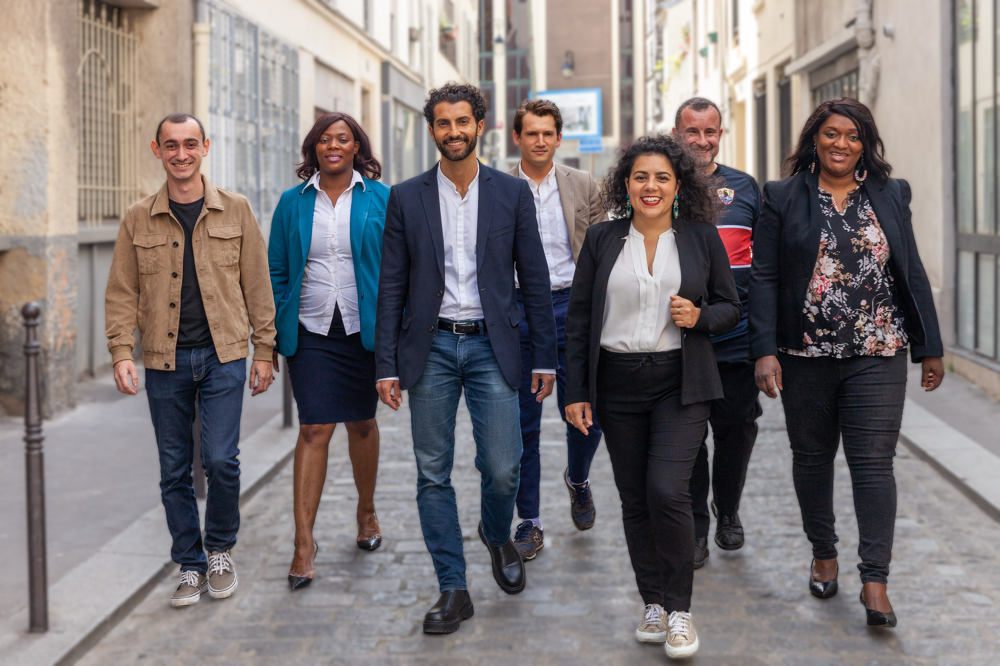

Notre équipe
Nos têtes departementales
Notre programme
Télécharger notre programmeMobilité et Réseau
Favoriser l’utilisation des transports en commun en créant des parkings gratuits avec un abonnement RATP aux abords des gares franciliennes (RER et Métro) à haute fréquentation
Redéfinir les besoins de transports urbains des nouveaux centres économiques et de recherches franciliens, notamment en incluant Rungis dans le plan urbain, afin de sortir du parisiano-centrisme
Améliorer et agrandir les gares franciliennes existantes pour qu’elles puissent accueillir des arrêts de trains internationaux et européens et mieux connecter les zones périphériques
Reprendre les meilleures pratiques d’autres régions d’Europe pour la construction d'infrastructures à usages multiples pour les Jeux Olympiques de 2024
Économie, Emploi, Tourisme
Tirer profit de nos sites patrimoniaux et culturels ainsi que de nos paysages, pour agrandir notre réseau cyclable et ainsi promouvoir le tourisme écologique/vert.
Soutenir les cafés et les bistrots indépendants franciliens en créant des chèques vacances exploitables dans la région pour relancer l'économie touristique.
Construire un pôle incubateur européen d’entreprises expertes et spécialisées en technologies vertes.
Utiliser les fonds structurels européens dans des projets éco-solidaires d’envergure locale en coordination avec les acteurs locaux (associations, fonds d'investissements franciliens.
Démocratie locale et Citoyenneté
Créer une section sur le site internet de la région permettant de consulter les appels d’offres en cours dans la région afin d’offrir davantage de transparence aux franciliens et franciliennes. Développer une ligne téléphonique ainsi qu’une adresse mail en parallèle de cette page internet.
Améliorer la visibilité concernant l’utilisation des fonds régionaux et faciliter la compréhension des données budgétaires à travers la mise en place des graphiques et d’infographies renouvelés chaque trimestre et en libre accès.
Consulter les franciliens et franciliennes à la fin de chaque projet régional afin qu'ils puissent évaluer le degré de participation citoyenne au projet
Développer et privilégier les mécanismes de démocratie participative dans l’élaboration des politiques publiques régionales
Introduire un Référendum d’Initiative Citoyenne (RIC) à l’échelle de la région afin de permettre aux Francilien.ne.s de poser des questions directement à leur concitoyen.ne.s.
Organiser une convention citoyenne sur un sujet que les Francilien.ne.s considèrent comme central (gratuité des transports, politique des espaces verts, culture...) et aboutissant à une série de propositions concrètes reprises par la région.
Formation et Éducation
Promouvoir les jumelages et échanges scolaires des lycées franciliens avec les lycées de l’Union Européenne.
Valoriser l'apprentissage des langues étrangères et élargir la présence de sections européennes dans les lycées franciliens des Zones d'Éducation Prioritaire.
Promouvoir l’instruction et la formation numérique pour tous.tes (garantir l’accès aux informations et aux contenus éducatifs en ligne, renforcer l’équipement des lycées, ajouter des classes de codage).
Créer une plateforme-support à destination des lycéen.ne.s, consistant en la mise en place d'outils participatifs dans les lycées, en lien avec les programmes nationaux d'Enseignement Moral et Civique.
Développer les tutorats à destination des lycéen.ne.s afin qu'ils aient toutes les clés en main pour décider de leur scolarité future, orientation professionnelle, et les préparer à des formations alternatives, notamment en alternance.
Renforcer le lien entre la région et les parents de jeunes lycéens pour permettre un traitement plus équitable des lycéens pendant leur scolarité, mais aussi pour améliorer l’accompagnement dans le choix des orientations professionnelles futures.
Favoriser l’intervention d’associations pour prévenir contre la cyberviolence, le cyberharcèlement, les inégalités femmes-hommes, etc.
Transition Écologique et Qualité de vie
Utiliser les fonds structurels européens dans des projets éco-solidaires d’envergure locale en coordination avec des acteurs locaux, notamment avec des associations ou par le biais de fonds d'investissements franciliens.
Prioriser les choix de matériaux durables dans le renouvellement des bâtiments publics, en commençant par les lycées.
Rédiger un plan d’aide à l'installation de panneaux photovoltaïques et d'énergies renouvelables au sein des bâtiments publics.
Promouvoir la récolte du compost via l'éducation citoyenne, en rendant disponible les bacs dans les mairies franciliennes et en optimisant leur récupération.
Créer un circuit énergétique court de biogaz à partir des déchets ménagers.
Accompagner et soutenir les associations solidaires et de transition écologique.
Créer une prime pour les travaux de rénovation énergétique.
Culture et Sport
Démocratiser l'accès aux installations sportives en élargissant les horaires d’ouvertures des établissements scolaires pour un accès libre, en augmentant les installations dans les Zones d'Éducation Prioritaire et dans les quartiers les plus précaires,en rendant le sport gratuit pour les étudiants, les demandeurs d’emploi et les personnes à revenu modeste, les retraité.e.s, les personnes handicapées, et en mettant en soutenant financièrement les associations locales.
Démocratiser le secteur culturel et promouvoir les arts en mettant à disposition un certain nombre de salles privées aux artistes indépendant.e.s, en augmentant les horaires d’ouvertures des bibliothèques et en élargissant le pass jeune à la région et non plus à la seule ville de Paris.